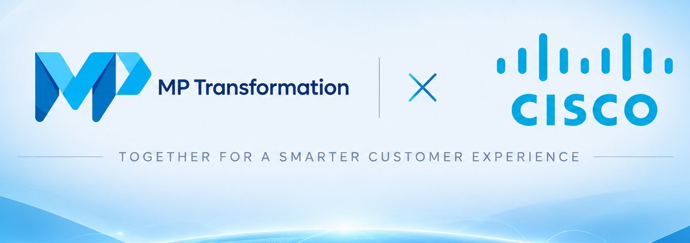
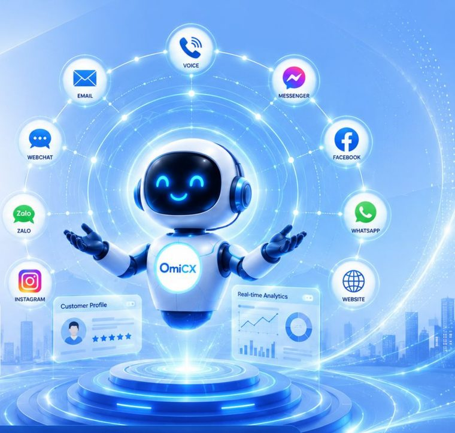
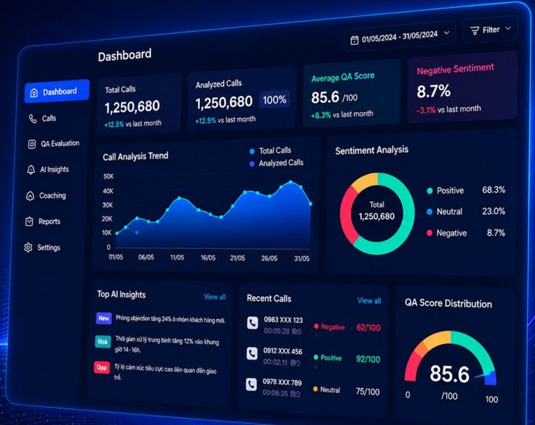
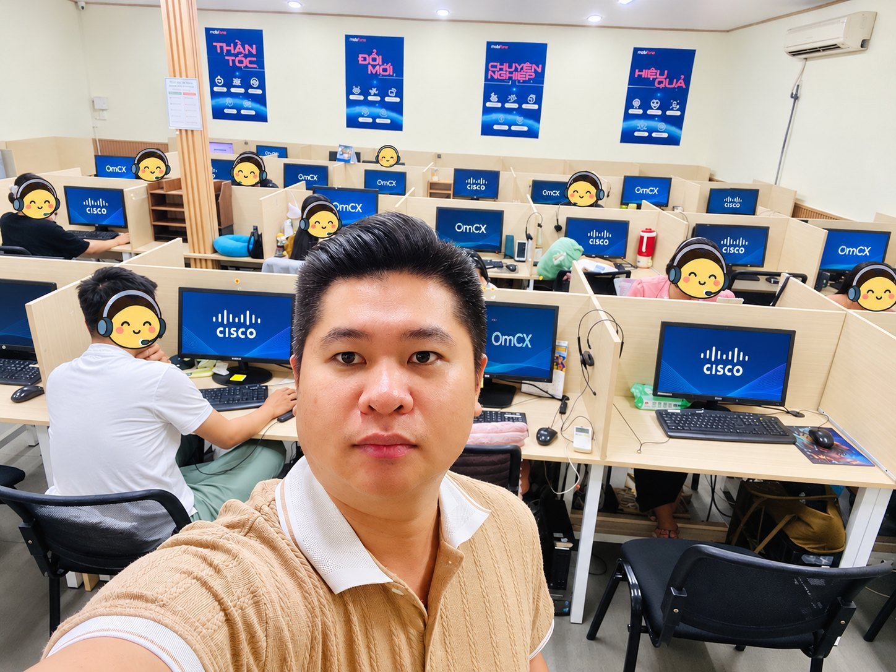
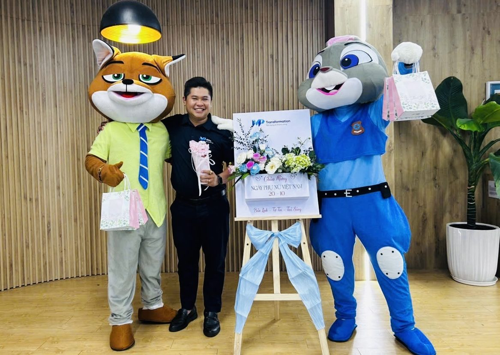

BUSINESS × TECHNOLOGY × CUSTOMER EXPERIENCE
Lê Quang Quyết
Banking Solutions Sales Manager at Minh Phúc Transformation (MPT)
Technology sets the speed. People build the trust.
I decode what happens behind every bank hotline call, from the view of someone who has implemented these systems.
With more than 10 years in technology, I look at the contact center from three sides: as a developer, as an implementer and as a solution consultant. Through the Contact Center Insights series I share practical views and experience so managers can understand the systems they run and spot where to improve.
About
The first time I walked into a contact center, I arrived at peak hour. Rows of desks, phones ringing non-stop, every agent talking to a customer, every call a different story, one after another. The room was loud and busy, yet everything followed rules.
I started in telesales while still a student, which meant talking to customers directly. From 2016 I moved into engineering: technical support, software engineer, CRM development team lead, then implementation team lead and project manager, in charge of integrating telephony, core banking and voicebot. After enough projects I noticed something: many real customer needs only show up after a project has started, and by then it is usually too late to do things differently. I wanted to meet customers earlier, hear their concerns from the start and find the right solution together. In 2026 I moved into solution consulting for that reason.
What I believe shows most clearly in call scoring. Manual QC usually hears only 1 to 3% of calls, while AI can cover 100%. But after AI scores a call, a person still reviews it, confirms whether the score is right and teaches the AI to become more accurate. Tools let people do more; they do not replace people.
Here I write about what I have seen: why hotlines get overloaded, why the numbers look good while customers still complain, why large investment projects still do not run. Not to lecture, but so you can see earlier what I only saw late.
Technology sets the speed. People build the trust.
Start here
If you are new here, start from the problem that worries you most. These five articles show best how I think about the contact center.
The articles are written in Vietnamese. Each link opens an automatic English translation.
- When the hotline is always overloaded
Why do so many contact centers stay overloaded?
Overload is rarely just a shortage of people. What is really making the queue longer?
- When the metrics look good but customers still complain
Many contact centers are measuring the wrong KPIs
Why pushing handling time down can make customers call back more, and which metrics show whether the issue was resolved.
- When QA hears only a small part of the calls
How does QA work in a contact center?
What QA does in a bank, and why hearing only a small share of calls is not enough.
- When a big investment does not take off
Why do so many contact center projects fail?
Good technology, yet the project is slow and below expectations. Where is the bottleneck usually?
- When people say AI will replace humans
Can a voicebot replace agents?
The straight answer is no. AI should take the repetitive work so people can do the work that needs thinking.
Solutions I advise on and provide
MPT is a Vietnamese technology company with more than 24 years of experience in contact centers. These are the solutions I most often introduce to the BFSI sector:
Following the journey of a call: from platform, intake and handling to quality monitoring.

PlatformCloud · CiscoWebex Contact Center
Cisco cloud contact center
Cisco's cloud-native platform. MPT is an official partner in Vietnam, supporting you from consulting and deployment to operations optimization.
Details on mpt.com.vn36,000+enterprises worldwide157countriesup to 35%lower operating cost- IntakeAI Agent Assistant
OmiBot
AI assistant that answers calls, 24/7
Receives and handles repetitive calls in a natural voice, and hands over to a human agent when needed.
Details on mpt.com.vn>1,000concurrent calls95%accuracy50–70%cost savings 
HandlingAI Contact CenterOmiCX
AI omnichannel contact center
Brings voice, Zalo, Facebook and email into one platform so agents handle faster and supervisors see the full picture.
Details on mpt.com.vn70%shorter handling time45%higher satisfactionx3productivity per agent
MonitoringAI Quality AssuranceOmiQC
AI call quality monitoring
Analyzes every call, scores it against your own criteria and gives early warnings of compliance risk.
Details on mpt.com.vn100%of calls analyzed70%QC cost savingsx3team productivity
See all solutions on mpt.com.vn
Services such as SIP Trunking/VBN and BPO are also available. Use the form below to ask.
MY VIEW
Technology sets the speed.
People build the trust.
From what I have seen behind every bank hotline call.
Four lessons from working in contact centers
The contact center is not just a cost center
Every call is a source of insight. If you listen, you understand your customers better.
Do not only watch speed, watch outcomes
Fast handling is not necessarily effective. Solving the issue on the first contact is the real value.
People and process come before technology
If the process is weak, technology only makes the problems happen faster.
Technology is leverage, empathy is the core
Technology helps serve better, but human understanding and responsibility are what create trust.
Activities
Programs and events I take part in with colleagues, partners and the community.

ProjectGo-live of Cisco Contact Center with MPT OmiCX for MobiFone, nationwideThe Cisco Contact Center and OmiCX solution went live for MobiFone across Vietnam, with teams working from Hanoi, Hai Phong, Da Nang, Ho Chi Minh City and Can Tho towards one shared goal. ActivityVietnamese Teachers' Day (20/11) at MPT: Thanking the "teachers" of the MPT familyOn 20/11 we thanked our Training team and in-house Trainers, the people who quietly pass on knowledge and energy to everyone at MPT, with flowers, gifts and a small gathering.
ActivityWomen's Day (20/10) at MPT: Strong, Confident, ShiningOn 20/10, the MPT team gave flowers, gifts and wishes to our female colleagues, with a greeting clip and two mascots joining in.The activity pages are in Vietnamese and open with automatic English translation.
You may be wondering
A few short answers about me and my work.
Who is Lê Quang Quyết?
Banking Solutions Sales Manager at MPT, with more than 10 years in technology for banking, insurance and finance. I moved from telesales to technical support, CRM, implementation and solution consulting.
Which solutions do I advise on?
Contact Center solutions for BFSI: Webex Contact Center, OmiBot, OmiCX and OmiQC.
What does Contact Center Insights cover?
Practical views on running a contact center: overloaded hotlines, misread KPIs, QA and failed projects. Read it on the Blog (Vietnamese, with automatic English translation).
Can AI replace agents?
No. AI takes over repetitive work so people can do the work that needs judgment.
How can I contact you?
Message on Zalo, call +84 587 793 865 or email quyetlq@mpt.com.vn.